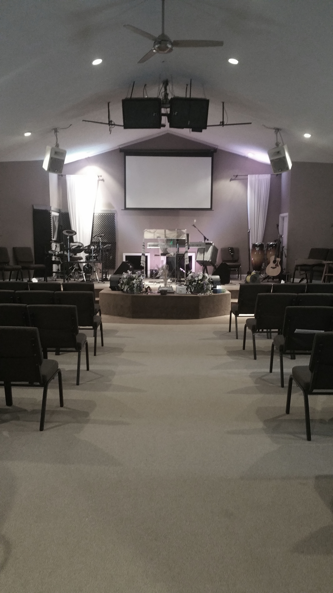
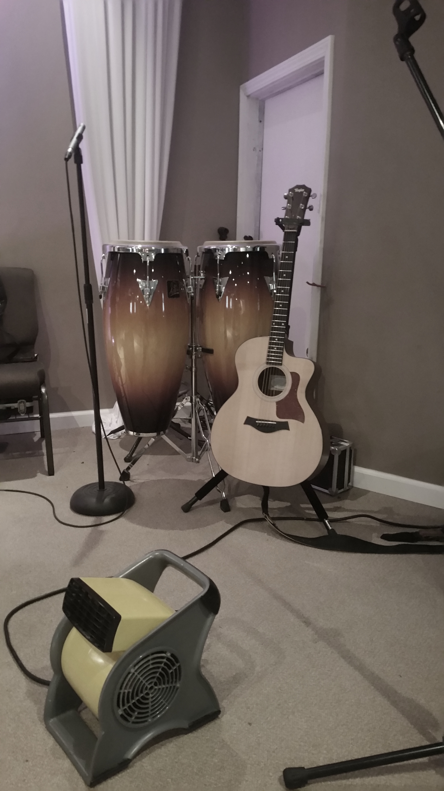

Harvest House International Church is an independent Christian Church that was founded in the winter of 2007 by Pastors Jimmy and Christina Parsons of Camby, Indiana. Located on N. Kitchen Rd. Mooresville, HHIC is a small, local church hoping to grow its members up in hopes of spreading God's word further and gathering more lost souls for God's harvest. We're a small church with a big heart!
On this site, you can learn a little bit more about HHIC and what we believe, what we do, and what we hope to do in the future. Feel free to begin by clicking the button below and reading our basic statement of faith, or visiting the other sections via the menu. We hope to see you soon!
"Big enough to reach the world, small enough to care for you" - Pastor Jimmy Parsons -
Our Services
Harvest House International Church meets weekly on Sundays and Wednesdays to grow in fellowship and wisdom of God. Services are held at our church at 10089 N. Kitchen Rd. Mooresville, IN 46158. We hope to see you there!
Sunday Service: 10:45 AM
We hold a service each Sunday morning to commemorate the day Jesus arose. Prayer, worship, giving, and hearing an applicable message is a crucial part of our services. All are welcome each and every Sunday!
We also hold a special service for children ages 3 - 19 in our Activity Building during the Pastor's message on Sunday mornings. However, on the final Sunday of the month, the entire congregation remains together in the Sanctuary to partake in communion.
Wednesday Service: 6:45PM
Our Wednesday evening services are very similar to those we hold on Sunday. The main difference is that on Wednesdays, we have much more in-depth Bible study. This service is designed to enrich people of all ages as well.
Typical Order of Services
Opening Song & Prayer
Pledge, Honorarium, Offering
Praise & Worship
The Message
Altar Call/Prayer


Local and Global Community Involvement
HHIC finds community involvement, both locally and globally, to be an important part of spreading God's word. We set 10% of the tithes and offerings aside weekly, with a goal of 50%, to be dedicated to community and international evangelism. Though we are an Independent Church, we have a worldwide vision of reaching the lost souls with the Gospel of Jesus.
Locally, HHIC is honored to help support the efforts of local community missions such as the Mooresville Food Pantry and Churches and Missions , which provide food and utility assistance for hundreds of people in need every month.
Internationally, HHIC makes connections through World Missions to Asia which is dedicated to presenting the Gospel, training pastors, establishing church congregations, and repeating the process.
Our Vision and Mission: Convert - Disciple - Commission
HHIC was founded with a vision in mind. Though there were many wonderful churches in the area that one could choose from, the founding pastors felt called to create another church not to compete with other churches, but rather to complete the full gospel message using distinct teachings unique to the ministry.
To do this, HHIC aims to grow the home church as well as work in nearby towns to propel the message further.
Behind the Name
The theme of Harvest was selected by HHIC because it was used by Jesus often to convey the idea of saving lost souls, one of the most important jobs assigned to the church. In a rural area such as Mooresville, this theme can be especially relatable as well. HHIC wishes to grow a good harvest of souls alongside the other crops our neighbors here raise.
Ministers
HHIC is fortunate to have an amazing group of Pastors to help us grow. Below you can learn more about each of the wonderful leaders of our church.
"Each one should give what he has decided in his heart to give, not out of regret or compulsion. For God loves a cheerful giver." - 2 Corinthians 9:7 -
We are not asking for your money here at HHIC. Whilst we appreciate all the monetary gifts we receieve, there is an unmatchable gift that you can give to God that means much more to us. All that we truly desire is that you give your heart to Jesus Christ and be saved.
"Ask, and it will be given to you; seek, and you will find; knock, and it will be opened to you." - Matthew 7:7 -
If you have any questions about HHIC or would just like to talk with one of the ministers, you can reach out to us via Facebook, email, or phone. We also have a Youtube Channel where we post some sermons and other videos. Please feel free to get in touch with us using the buttons below. We look forward to hearing from you!